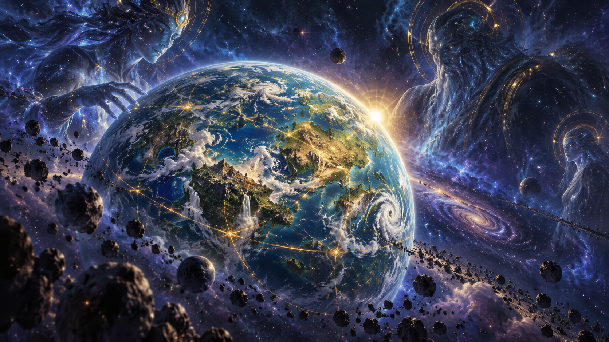

01

Chapitre01 / 06
Du réveil des puissances cosmiques à la chute du prince Arthas, parcourez les événements qui ont façonné le monde — puis éprouvez votre mémoire.
Choisissez une époque. Chaque chapitre relie un événement fondateur à ses conséquences sur les peuples d’Azeroth.

Cliquez sur une figure pour comprendre son rôle, son dilemme et l’héritage laissé au monde.
« Le royaume qu’il voulait sauver devint la première victime de son obsession. »La tragédie d’Arthas Menethil
Cinquante questions tirées aléatoirement d’une banque de soixante-cinq. Chaque réponse révèle une explication.